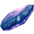
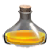
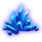

Ограненный лиметит
Предметы / Обмен
Открыть в интерактивной вики →
| Вес | 5 |
|---|---|
| Цена | 130 |
Описание
Компонент, используемый для изготовления  Тиземлин.
Тиземлин.
Огранить уТиземлин 3х  Золото
Золото

Бирюзовый ингибитор. Его создает колдТиземлин. Огранить у
Тиземлин 3х 
Лиметит за 20Золото| Ингредиент для изготовления Бирюзового ингибитора. Изготавливает колд Тиземлин. |
Применение
|
Изготовление
Изготавливает Тиземлин в Рыбацкой Деревне за 20 золота после доставки ингредиентов:
|